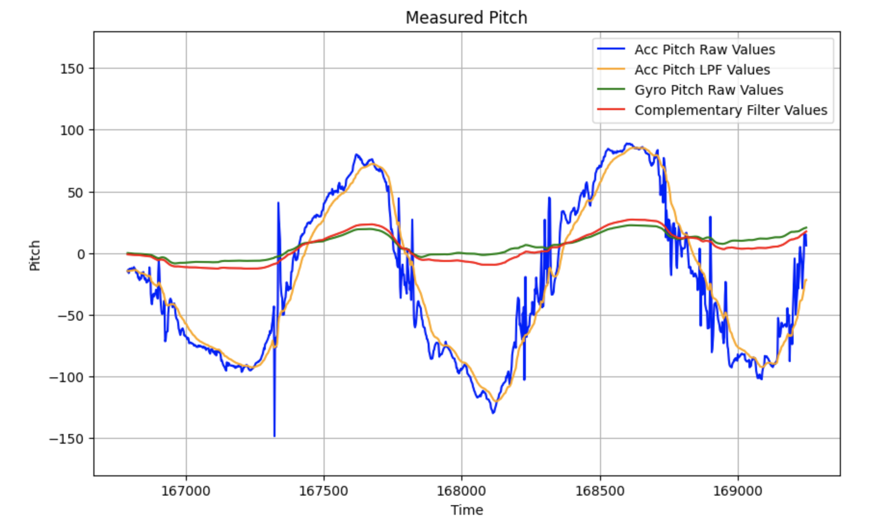

Lab 2: IMU
02.04.2025
Setup
The objective of Lab 2 was to configure the IMU sensors on my robot and thoroughly test its accelerometer and gyroscope sensor data. I used Python to analyze the data and implemented filters and data collection on the Arduino side.
I first directly connected the IMU to the Artemic board and installed the IMU library in the Arduino IDE. Shown below is a picture of my IMU to Artemis connection:

I also added in code that made the LED on the board blink three times after the gyroscope had been initialized:
Next, I ran the IMU example code to ensure that my sensors were working. I moved and rotated the IMU around, checking what effects this would have on the Arduino's Serial Plotter.
Accelerometer
The first sensor that I tested was the accelerometer. Because the accelerometer measured X, Y, and Z translation, I used geometry to convert data into pitch and roll. In Arduino, I created conversion functions, using the atan2 function to ensure a correct output range.
pitch_a = atan2(myICM.accY(),myICM.accZ())*180/M_PI; roll_a = atan2(myICM.accX(),myICM.accZ())*180/M_PI;
I then tested my accelerometer sensor by positioning my IMU to be at {-90, 0, 90} degrees for both pitch and roll. As can be seen in the serial plotter in the videos below, the values were decently accurate. A source of error that may have caused inaccuracy was human error - I was in control of the positioning, so the measurements were not exactly -90, 0, or 90 degrees.
FFT
After the initial accelerometer testing, I moved on to determining how much noise the accelerometer data had. To do this, I sent the data from the board to my computer and analyzed using jupyter notebook.
I first held the IMU stable in one position, but realized from previous years' labs that I would need to move the IMU to be able to conduct a Fourier transform. I then collected data for both pitch and roll movements where I rotated the IMU along the respective axis at as constant of a speed as I could.
The pitch plot below shows the approximately sinusoidal movements generated by pitching.
The roll plot is similar to the pitch plot, but it seemed to have more noise and spikes in data. This could be due to my unsteadiness when rolling the IMU.
Next, I conducted a Fourier transform on both of these sets of pitch and roll data, getting the following results:
Low Pass Filter
From the Fourier transform, I set my cutoff frequency to 5 Hz, as the plots seemed to show that most noise was between 1-5 Hz. I also determined that my sampling rate was around 396 messages/sec by dividing the number of messages by the difference in the first and last time stamps. Using these values and the equations provided in class, I calculated an alpha value of ~0.0735. I then used this value to code a low pass filter in Arduino (code below is just for roll):
const float alpha = 0.0735;
acc_roll_lpf[0] = acc_roll_raw[0];
for (int n = 1; n < array_size; n++)
{
float roll_raw_curr = acc_roll_raw[n];
acc_roll_lpf[n] = alpha * roll_raw_curr + (1 - alpha) * acc_roll_lpf[n - 1];
acc_roll_lpf[n - 1] = acc_roll_lpf[n];
}
I then plotted the filtered data against the raw data.
The pitch data showed significantly less noise with the low pass filter, as can be seen with the smoothing of large spikes and vertical movements.
The low pass filter was especially necessary for the roll data, as there were significantly more spikes and noise compared to the pitch data. The LPF visibly smoothed out a lot of these points.
Gyroscope
After finishing up with the low pass for the accelerometer, I moved on to testing the gyroscope. I was able to calculate roll, pitch, and yaw by referencing the code provided in the example file. Because the gyroscope measured angular velocity, I needed to incorporate some kind of time interval to integrate the velocity and add to the previous value. Below, you can see my code implementation for collecting yaw data from the gyroscope. The pitch and roll collection follows the same logic.
float yaw_g = 0, dt = 0;
unsigned long last_time = millis();
for (int i = 0; i < array_size; i++)
{
if (myICM.dataReady())
{
myICM.getAGMT();
// gyro data
dt = (millis() - last_time) / 1000.;
last_time = millis();
yaw_g = yaw_g + myICM.gyrZ() * dt;
gyro_yaw_raw[i] = yaw_g;
comp_yaw[i] = (1 - alpha) * gyro_yaw_raw[i];
// time
times[i] = (int)millis();
}
}
I used the same method of collecting data as with the accelerometer - rotating at approximately a constant rate.
Roll and pitch gyroscope data can be seen below, along with the raw and filtered accelerometer roll and pitch data for comparison.
Because I was taking measurements from the gyroscope, I was able to take yaw data:
The graphs show that the gyroscope data has less noise than the accelerometer, but has a tendency to drift over time, which led to lower accuracy.
Complementary Filter
The data analysis done on the accelerometer and gyroscope data revealed that while the accelerometer was accurate but noisy, the gyroscope had the opposite problem, struggling with accuracy while having little noise. To balance this effect out, I implemented a complementary filter to optimize the noise and accuracy of the IMU's rotational data.
For the pitch and roll data, I used my previous alpha value of 0.0735 to determine the weights of the accelerometer and gyroscope:
comp_pitch[n] = (1 - alpha) * gyro_pitch_raw[n] + alpha * acc_pitch_lpf[n]; comp_roll[n] = (1 - alpha) * gyro_roll_raw[n] + alpha * acc_roll_lpf[n];
I then graphed the accelerometer raw and filtered data, the gyroscope raw data, and the complementary filtered data for pitch (shown below). The red line is the complementary filter values, and it shows a balance between the accuracy of the accelerometer and the noiselessness of the gyroscope.
I also graphed the roll data to compare. The complementary filter showed similar results to the pitch data.
Sample Data
The next step was to optimize my data collection speed. I did this by making sure that all buffers and debugging statements were removed, including lines that printed to the Serial monitor. I coded my data collection by first storing the data in arrays and then separately sending them to the computer, which I found was the optimal way to send and analyze data in Lab 1.
Finally, I created a command, GET_IMU_DATA, that collected time-stamped IMU data, which followed the format:
Time | Accelerometer Raw|LPF Pitch | Accelerometer Raw|LPF Roll | Gyroscope Raw Pitch|Roll|Yaw | Comp Filter Data
Finally, I ensured that I was able to collect data for more than five seconds: